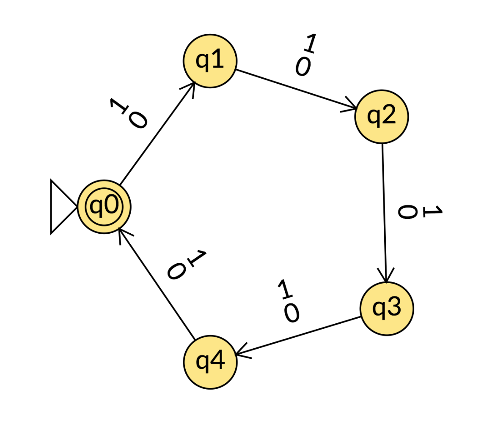
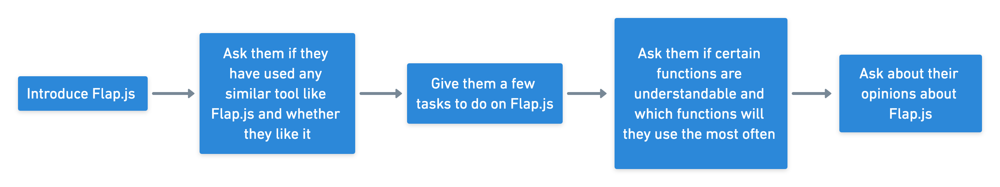
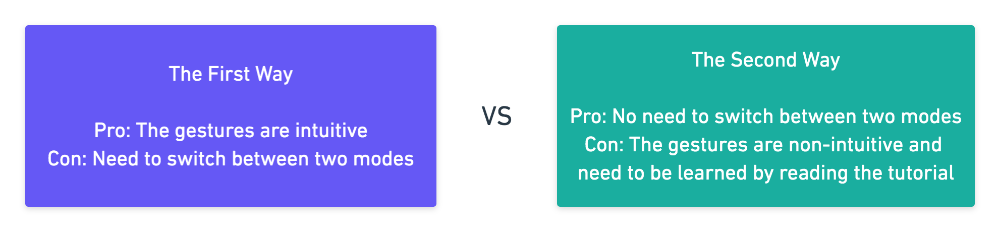
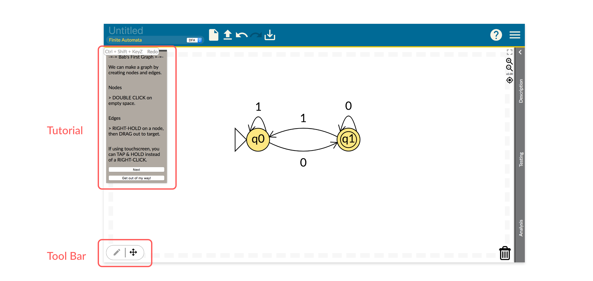
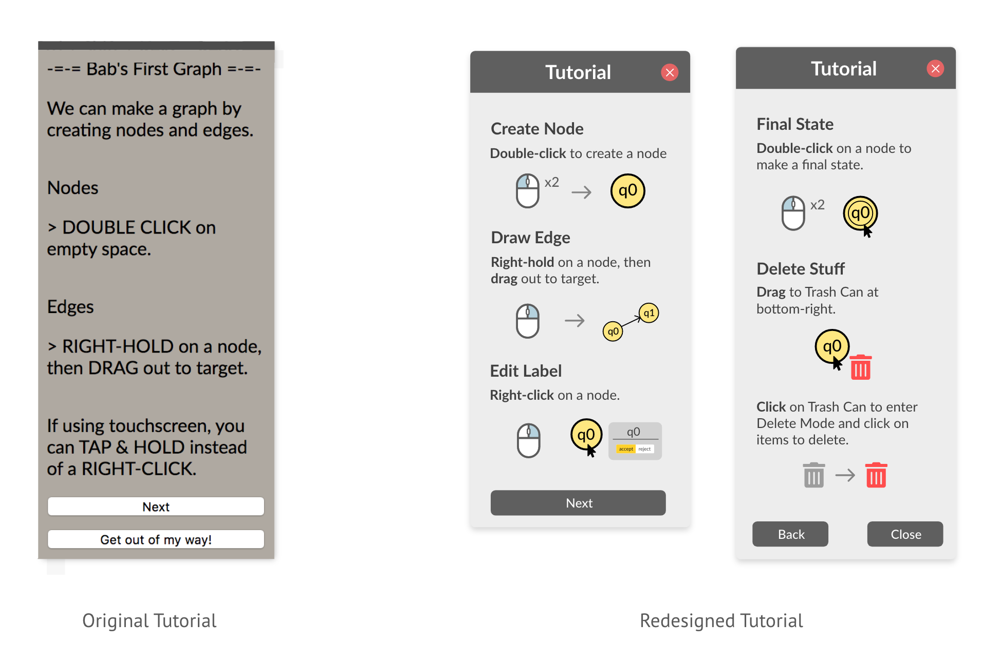
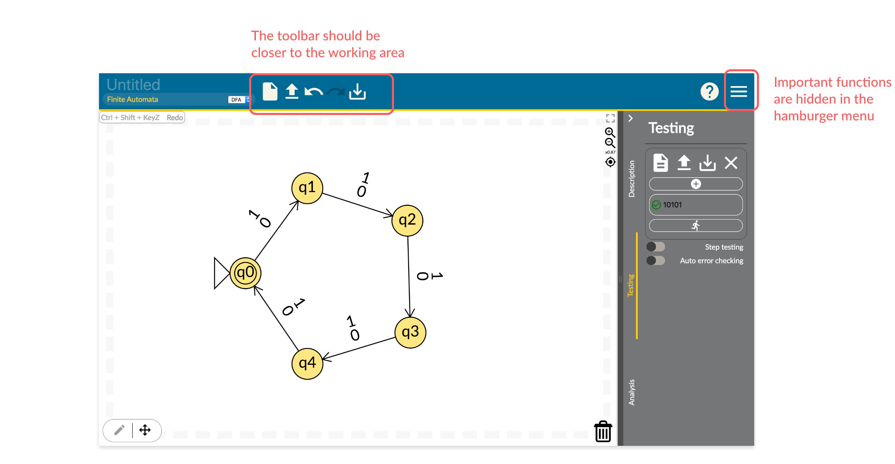
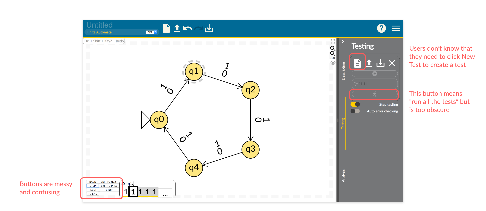
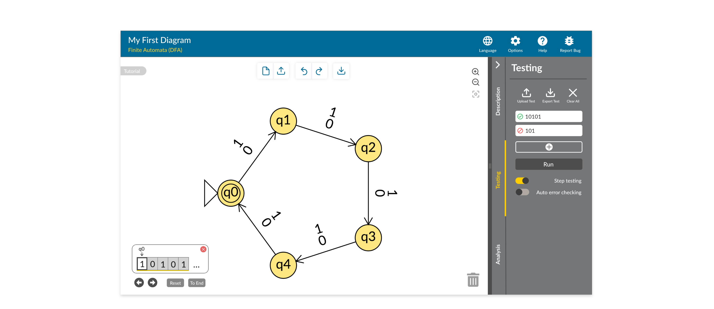

FLAP.JS
UI/UX · 2019
OVERVIEW
Flap.js is a web app for computer science students to explore and construct formal languages and automata with real-time analysis and error checking. It was initiated by Professor Mia Minnes in Computer Science and Engineering Department at UC San Diego. I joined the team to redesign the user interface of Flap.js. Since the computer science concepts of the platform were utterly new to me, the design process was considerably challenging. I managed to overcome this difficulty and designed a more intuitive interaction experience for users.
MY CONTRIBUTIONS
- Conducted user interviews and usability tests to understand unmet user needs.
- Analyzed research findings and proposed design solutions based on levels of feasibility and importance.
- Redesigned the user interface and created hi-fi prototypes.
DURATION
3 Months
MY ROLE
UI/UX Designer
TEAM
1 UI/UX Designer
7 Developers
TOOLS
Adobe XD
UNDERSTANDING THE APP
As mentioned before, Flap.js is a web app for computer science students to explore and construct formal languages and automata. You may ask: What exactly does this web app do? What on earth is formal languages and automata? To be honest, at beginning I was as confused as you might be now. In fact, this subject is only taught in a specific computer science class, and even most computer science students who haven’t taken that class do not understand the subject.
I had a long conversation with one of computer science engineers in the team. She tried to explained the computing theories to me, but I failed to grasp the concept. Then she gave up and suggested me read the textbook, which was about 3-inch thick. I turned down her “favor.” To better understand the web app and computer science concepts it involves, I watched a few tutorials on YouTube and played with the web app for a long time. Finally, I was able to understand the basic concepts and what users would normally do on the web app.
Simply speaking, users would draw diagrams of finite automata (a simple idealized machine used to recognize patterns), and they would run tests to see if character sets of the input have passed through.
A Diagram Drawn with Flap.js
USER INTERVIEW & USABILITY TEST
Before jumping into user interviews and usability tests, I wanted to get some early feedback on Flap.js, so I talked to the team one-on-one and collected their opinions on the current design. I also played with Flap.js myself and recorded my initial thoughts as a first-time user.
With help from Professor Minnes, I sent recruiting emails to students in CSE 105 class (The Mathematical Theory of Computability) and found 4 participants for interviews and usability tests. Since I did not holistically learn about the computer science subject, I had a computer engineer from the team to accompany me during each interview and test. If my conversation with the participants became too professional for me, I asked my partner to handle it. Thereby, we would not miss any valuable feedback from them.
Below is the process of the user interview and usability test.
I summarized my findings and put all problems into four categories based on their severity.
I (Must be fixed)
II (Should be fixed)
III (Could be fixed if we have time)
IIII (Debatable opinions of mine)
I shared my findings and mapped out our future plan with the team. Besides the severity of a problem, the difficulty of fixing a problem was also a factor I took into consideration for redesign.
REDESIGN HIGHLIGHTS
Part 1 Tutorial vs. Toolbar
There were two ways for users to draw a diagram on Flap.js, and I was wondering which way was preferred. The first way was to switch between Action Mode and Move Mode by clicking the toolbar, and the gestures were intuitive (users only needed to left-click or left-hold). In the second way, there was no bother to switch between the two modes, but users had to read the tutorial first, because some gestures were not very intuitive (e.g. they needed to right-hold to draw a line). Only one of the two ways should be adopted, since having them both would cause great confusion.
 Original version of the homepage
During the usability tests, all of the four participants chose to read the tutorial rather than switching modes at the toolbar, which means the second way is more preferable. Since participants also complained about the readability of the tutorial, I decided to redesign the tutorial using more concise languages and simple illustrations.
Part 2 Rearrangement of Tools
According to the usability tests, users had difficulty finding tools hidden under the hamburger menu, so I took out all the tools from the menu. In addition, I moved the toolbar from the banner to the working area, so that users would take less efforts reaching the tools, and the banner would not look too cramped.
Original tool bar
Redesigned tool bar
Part 3 Redesign of the Testing Function
In the original version, tools on the right could be barely noticed when users entered the website, since they were hidden under the drawer. Because 3 out of 4 participants considered the Testing function to be the most helpful and the most likely to be used, I chose to expand the drawer and display the Testing function when users enter the website. When I first used the Testing function, it was confusing to me, and I thought it was probably due to my lack of professional knowledge. However, it turned out to be confusing to the participants as well. Therefore, I redesigned the visual indicators and buttons of that function.
Original testing feature
In the redesign version, there is one test created by default to demonstrate the function to new users. The text input has a placeholder that reminds users to input strings. I replaced the previous confusing and redundant buttons with recognizable and concise ones.
Redesigned testing feature
TAKEAWAY
It was a challenge for me to redesign a product based on a subject I completely didn't understand at first. I was barely closed to its target user group. Intending to refine the user experience, I tried my best to absorb new computer science knowledge in a short time and closely cooperate with computer science engineers in my user research process to understand user needs better. Instead of running away from something unfamiliar, I trained myself to deal with the unknown. In addition, I became more confident in designing for others. The fascinating thing about design is empathy, the ability to understand the behaviors and needs of people in a community I do not belong to.